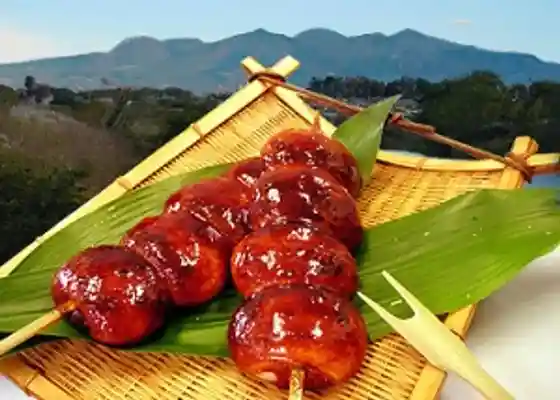
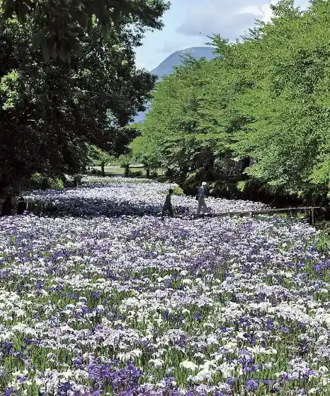
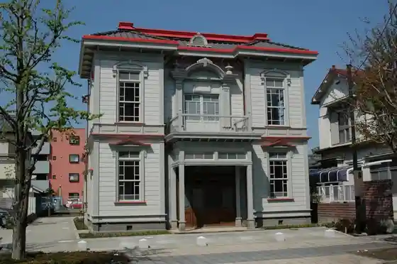

Kezo Tera Park
Isesaki, Gunma · 0270-24-5111 · Official / source link
(Kabu) Uwage Shimbunsha (Uwage Shimbun Insatsu Center)
Isesaki, Gunma · 0270-23-8600 · Official / source link
Chuji Chaya Honpo
Isesaki, Gunma · 0270-32-0124 · Official / source link

Akahori Hana Shobu Sono
Isesaki, Gunma · 0270-62-1151 · Official / source link

Isesaki Meiji Kan
Isesaki, Gunma · 0270-40-6885 · Official / source link

Koizumi Inari Otorii Shuhen Kosumosu Hatake
Isesaki, Gunma · 0270-62-1311 · Official / source link
Koizumi Inari Shrine
Isesaki, Gunma · 0270-24-5111 · Official / source link
Isesakimonja
Isesaki, Gunma · 0270-24-2211 · Official / source link
Azuma Suisei Shokubutsu Park
Isesaki, Gunma · 0270-62-1311 · Official / source link
Isesaki Kikka Taikai
Isesaki, Gunma · 0270-24-5111 · Official / source link
Sekai Isan Tajima Yahei Kyutaku
Isesaki, Gunma · 0270-61-5924 · Official / source link
Kasukawa no Koi no Bori
Isesaki, Gunma · 0270-24-5111 · Official / source link
Joshu Inaka Ya
Isesaki, Gunma · 0270-62-0233 · Official / source link
Sansui Shokudo
Isesaki, Gunma · 0270-25-6202 · Official / source link
Soba Kokorozashi N
Isesaki, Gunma · 0270-74-7467 · Official / source link
Asamiudon
Isesaki, Gunma · 0270-74-2445 · Official / source link
Edo Sei
Isesaki, Gunma · 0270-23-6126 · Official / source link
Isesaki Mirai Park (Isesaki City Tami no Mori Park)
Isesaki, Gunma · 0270-20-3333 · Official / source link
Guriguridoggukafe
Isesaki, Gunma · 0270-75-5878 · Official / source link